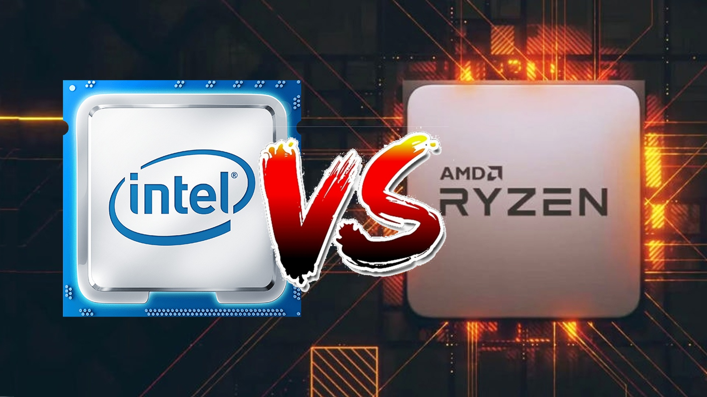

The blue CPU is better for performance, while the red CPU is better for battery life.
When it comes to the specifics, Blue (lntel) and Red (AMD) each have their own price specifications.
Blue is primarily concerned with performance; it is twice as good as Red in terms of read and write speeds. In operating games, video editing, and other applications, there are negligible performance advantages. While performing the same duties, the Blue consumes a little more power than the Red. This is capable of handling greater internet speeds as well as quickly loading programmes.
When opposed to Blue, Red is mostly good at conserving battery power while doing a task. When compared to Blue, the read and write rates are half as fast. In comparison to the Blue, the core parts were likewise cut in half.
It has a slower internet speed than Blue and can only handle raw 4k. Editing is also a bit slow. In 2022, CPUs capable of handling greater internet speeds will be available.
One of the most heated disputes among PC aficionados is between AMD and Intel, and with a new Intel release on the horizon, the battle is heating up.

Intel has provided consumers with standout performers year after year, so it's been one-way traffic. AMD, on the other hand, has made up its mind.
The gap between Intel and AMD has shrunk significantly since AMD debuted its first-generation Ryzen processors. AMD announced its 3rd generation of Ryzen CPUs in 2019, delivering incredible performance at AMD's traditional cheap costs.
The AMD vs. Intel rivalry is still going strong, with no clear winner. That's fantastic news for customers. This fierce competition continues to provide us with the greatest CPU for gaming, creative activities, and everyday use, providing us a wider range of options at every price point.
However, this makes picking between AMD and Intel much more difficult. Fortunately, you don't have to select one over the other. Both have their own set of strengths and disadvantages, as well as a wide range of good CPUs to suit any requirement and price. Still, because this is a straight Intel vs. AMD battle, it's crucial to understand where each manufacturer excels, particularly in terms of price, overclocking, graphics, and component variety. That way, you'll be able to make informed decisions.
The x86 series of microprocessors was invented by Intel, and AMD and Intel are now competitors in this market. While Intel is said to be the world's largest maker of x86-based processors, AMD is ranked second.
In terms of cost-to-performance, however, AMD absolutely outperforms Intel.
Exceptionally close to Intel's products in terms of performance. Intel has a reputation for representing enthusiast-elitists who demand the absolute best system, which is OK. AMD's technology provides a more well-rounded performance package. AMD can't claim to be the fastest processor on the market.
The average clock speed of an Intel Core 9th generation processor is higher than that of AMD processors. This is especially helpful if you want to work in a single programme, such as a game or Photoshop. In the lower sector, Intel Core CPUs are more expensive on average and have a larger TDP (wattage), while in the high-end market, they are becoming more economical and energy-efficient.
A 3rd generation AMD Ryzen CPU, notably in the high-end and pro segment, features more cores and threads. This allows you to do multiple activities at once, such as video editing. Except in the pro segment, an AMD Ryzen processor is generally more energy-efficient and inexpensive.
Our AMD vs Intel CPU Benchmarks Hierarchy shows how all of these CPUs compare, but the environment has shifted with AMD's Ryzen 5000 introduction. AMD's latest processors, the Ryzen 9 5950X and Ryzen 9 5900X, as well as the Ryzen 5 5600X, have thrown the mainstream desktop range into disarray. For more information, see our comprehensive Ryzen 5000 series coverage, which includes pricing, benchmarks, and availability.
The Ryzen 5000 series were the highest-performing chips on the market at the time of their release, outperforming Intel in every important statistic, including gaming, application performance, power consumption, and thermals.
Intel retaliated with its Rocket Lake chips, which put a lot of pressure on AMD's Ryzen 5000 series. With the flagship Core i9-11900K, Rocket Lake provides a 19 percent gain in IPC and high clock rates up to 5.3 GHz, but the chips are still etched on the older 14nm technology. As a result, the new chips have eight cores instead of the 10 seen in Intel's previous-generation chips. Surprisingly, Intel was able to close the performance gap with AMD thanks to the Willow Cove architecture's dramatic IPC increases. Intel has even wrested critical wins in important pricing bands, such as mainstream gaming processors, in some circumstances.
AMD's unrelenting assault with Zen-based CPUs has reshaped our expectations for both the mainstream desktop and high-end desktop markets, catching Intel off guard as it clung to the 14nm technology and Skylake architectures. AMD CPUs have evolved over the last few years from low-cost, power-hungry devices to high-end architectures with more cores, more performance, and lower power consumption.
Intel retaliated by gradually adding features and cores across its product stack, but this had unintended consequences, such as increased power consumption and heat generation. These issues simply serve to highlight the company's difficulties with design and fabrication. The switch to the Cypress Cove microarchitecture allowed Intel to squeeze greater power out of fewer cores, but the design has restrictions due to the fact that it was developed for 10nm but etched on the now-defunct 14nm process. This limits the number of cores available and resulting in high power consumption, especially in flagship models.
Later this year, Intel will release its Alder Lake CPUs, which will totally redefine x86 desktop PC chips with a new hybrid architecture. Not to be outdone, AMD has announced that its new CPUs with 3D V-Cache will be available later this year. Because of the almost-unthinkable 192MB of L3 cache strapped onto a beefed-up Zen 3 processor, such chips will deliver up to 15% higher gaming performance. That means the AMD vs. Intel struggle could alter towards the end of the year, but for the time being, this is the state of the market.
When it comes to clock speed, Intel still reigns supreme. This can be a significant benefit for die-hard gamers. When it comes to cores and threads, AMD has the upper hand. Except in the Pro market, an AMD Ryzen processor is frequently slightly less expensive than an Intel Core processor. Which processor you choose will be determined by your personal preference for brands, but make sure it meets your demands first.
Author: Nithin Vasudev